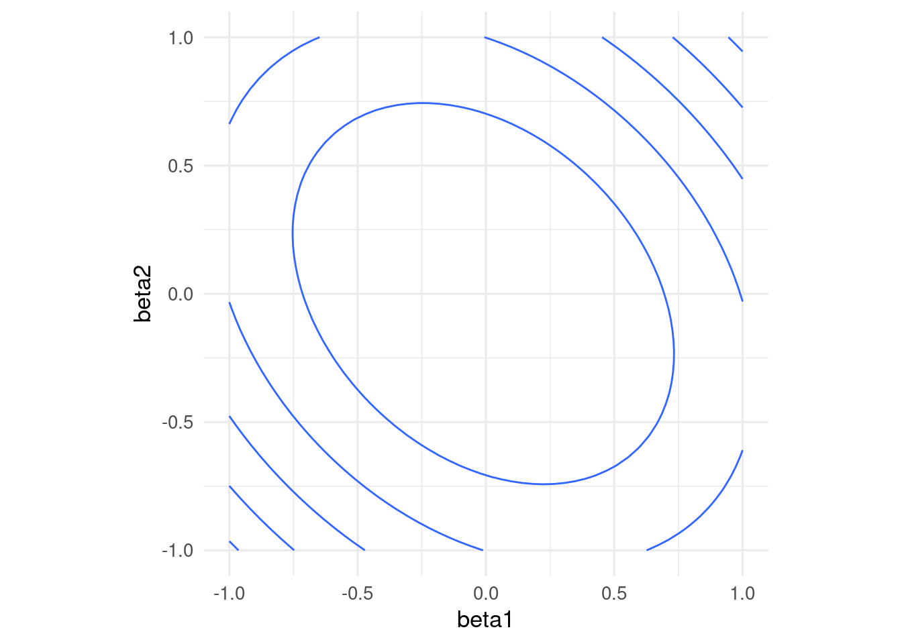

library(tidyverse)
h <- function(x) x^2 + (x - 2)^2 - log(x^2 + 1)Apéndice A — Apéndice 1: descenso en gradiente
Para ajustar varios modelos que vemos en este curso es necesario minimizar una función objetivo. Existe una gran cantidad de algoritmos de optimización útiles, pero en aprendizaje de máquina uno de los más utilizados es el descenso máximo (o descenso en gradiente), y modificaciones como descenso estocástico.
Supongamos que una función \(h(x)\) es convexa y tiene un mínimo. La idea de descenso en gradiente es comenzar con un candidato inicial \(z_0\) y calcular la derivada en \(z^{(0)}\). Si \(h'(z^{(0)})>0\), la función es creciente en \(z^{(0)}\) y nos movemos ligeramente a la izquierda para obtener un nuevo candidato \(z^{(1)}\). si \(h'(z^{(0)})<0\), la función es decreciente en \(z^{(0)}\) y nos movemos ligeramente a la derecha para obtener un nuevo candidato \(z^{(1)}\). Iteramos este proceso hasta que la derivada es cercana a cero (estamos cerca del óptimo).
Si \(\eta>0\) es una cantidad chica, podemos escribir
\[z^{(1)} = z^{(0)} - \eta \,h'(z^{(0)}).\]
Nótese que cuando la derivada tiene magnitud alta, el movimiento de \(z^{(0)}\) a \(z^{(1)}\) es más grande, y siempre nos movemos una fracción de la derivada. En general hacemos \[z^{(j+1)} = z^{(j)} - \eta\,h'(z^{(j)})\] para obtener una sucesión \(z^{(0)},z^{(1)},\ldots\). Esperamos a que \(z^{(j)}\) converja para terminar la iteración.
Ejemplo
Si tenemos
Calculamos (a mano):
h_deriv <- function(x) 2 * x + 2 * (x - 2) - 2*x/(x^2 + 1)Ahora iteramos con \(\eta = 0.4\) y valor inicial \(z_0=5\)
z_0 <- 5
eta <- 0.4
descenso <- function(n, z_0, eta, h_deriv){
z <- matrix(0,n, length(z_0))
z[1, ] <- z_0
for(i in 1:(n-1)){
# paso de descenso
z[i+1, ] <- z[i, ] - eta * h_deriv(z[i, ])
}
z
}
z <- descenso(20, z_0, eta, h_deriv)
z [,1]
[1,] 5.0000000
[2,] -1.2461538
[3,] 1.9571861
[4,] 0.7498212
[5,] 1.5340816
[6,] 1.0455267
[7,] 1.3722879
[8,] 1.1573987
[9,] 1.3013251
[10,] 1.2057209
[11,] 1.2696685
[12,] 1.2270627
[13,] 1.2555319
[14,] 1.2365431
[15,] 1.2492245
[16,] 1.2407623
[17,] 1.2464122
[18,] 1.2426413
[19,] 1.2451587
[20,] 1.2434784Y vemos que estamos cerca de la convergencia. Podemos graficar:
dat_iteraciones <- tibble(iteracion = 1:nrow(z),
x = z[, 1], y = h(z[, 1]))library(gganimate)
curva <- ggplot(tibble(x = seq(-4, 5, 0.1)), aes(x = x)) + stat_function(fun = h) +
xlim(c(-4, 5))
descenso_g <- curva +
geom_point(data = dat_iteraciones, aes(x = x, y = y), col = "red", size = 3) +
transition_time(iteracion) +
theme_minimal(base_size = 20)
animate(descenso_g)Selección de tamaño de paso \(\eta\)
Buscamos un \(\eta\) apropiado para cada problema:
- Si hacemos \(\eta\) muy chico, el algoritmo puede tardar mucho en converger.
- Si hacemos \(\eta\) demasiado grande, el algoritmo puede divergir.
z_eta_chico <- descenso(20, 5, 0.01, h_deriv)
z_eta_grande <- descenso(20, 1.8, 0.6, h_deriv)
dat_chico <- tibble(iteracion = 1:nrow(z), x = z_eta_chico[, 1], y = h(z_eta_chico[, 1]), tipo = "η = 0.01")
dat_grande <- tibble(iteracion = 1:nrow(z), x = z_eta_grande[, 1], y = h(z_eta_grande[, 1]), tipo = "η = 0.6")
dat_iteraciones$tipo <- "η = 0.03"
dat <- bind_rows(dat_chico, dat_grande, dat_iteraciones)library(gganimate)
curva <- ggplot(tibble(x = seq(-4, 5, 0.1)), aes(x = x)) + stat_function(fun = h, colour = "gray") +
xlim(c(-4, 5))
descenso_3 <- curva +
geom_point(data = dat, aes(x = x, y = y), col = "red", size = 3) +
facet_wrap(~tipo, nrow = 1) + ylim(c(0, 50)) +
transition_time(iteracion) +
labs(title = "Iteración {frame_time}") +
theme_minimal(base_size = 20)
animate(descenso_3, width = 1000, height = 300)
Tip
Es necesario ajustar el tamaño de paso para cada problema particular. Si la convergencia es muy lenta, podemos incrementarlo. Si las iteraciones divergen, podemos disminuirlo
Funciones de varias variables
Si ahora \(h(z)\) es una función de \(p\) variables, podemos intentar la misma idea usando el gradiente, que está definido por:
\[\nabla h(z) = \left( \frac{\partial h}{\partial z_1}, \frac{\partial h}{\partial z_2}, \ldots, \frac{\partial h}{\partial z_p} \right)^t,\] es decir, es el vector columna con las derivadas parciales de \(h\).
Por cálculo sabemos que el gradiente apunta en la dirección de máximo crecimiento local, asi que el paso de iteración, dado un valor inicial \(z_0\) y un tamaño de paso \(\eta >0\) es
\[z^{(i+1)} = z^{(i)} - \eta \nabla h(z^{(i)})\]
Las mismas consideraciones acerca del tamaño de paso \(\eta\) aplican en el problema multivariado.
h <- function(z) {
z[1]^2 + z[2]^2 - z[1] * z[2]
}
h_gr <- function(z_1,z_2) apply(cbind(z_1, z_2), 1, h)
grid_graf <- expand.grid(z_1 = seq(-3, 3, 0.1), z_2 = seq(-3, 3, 0.1))
grid_graf <- grid_graf |> mutate( val = h_gr(z_1, z_2) )
gr_contour <- ggplot(grid_graf, aes(x = z_1, y = z_2, z = val)) +
geom_contour(binwidth = 1.5, aes(colour = after_stat(level)))
gr_contourEl gradiente está dado por (calculado a mano):
h_grad <- function(z){
c(2*z[1] - z[2], 2*z[2] - z[1])
}Podemos graficar la dirección de máximo descenso para diversos puntos. Estas direcciones son ortogonales a la curva de nivel que pasa por cada uno de los puntos:
grad_1 <- h_grad(c(0,-2))
grad_2 <- h_grad(c(1,1))
eta <- 0.2
gr_contour +
geom_segment(aes(x = 0.0, xend = 0.0 - eta * grad_1[1], y = -2, yend = -2 - eta * grad_1[2]),
arrow = arrow(length = unit(0.2, "cm"))) +
geom_segment(aes(x = 1, xend = 1 - eta * grad_2[1], y = 1, yend = 1 - eta*grad_2[2]),
arrow = arrow(length = unit(0.2, "cm"))) + coord_fixed(ratio = 1)
Y aplicamos descenso en gradiente:
inicial <- c(3, 1)
iteraciones <- descenso(150, inicial , 0.1, h_grad)
colnames(iteraciones) <- c("X1", "X2")
df_iteraciones <- as_tibble(iteraciones) |>
mutate(iteracion = 1:nrow(iteraciones))
graf_descenso_2 <- ggplot(data = df_iteraciones |> filter(iteracion < 20)) +
geom_contour(data = grid_graf,
binwidth = 1.5, aes(x = z_1, y = z_2, z = val, colour = ..level..)) +
geom_point(aes(x=X1, y=X2), colour = 'red', size = 3)
if(FALSE){
library(gganimate)
graf_descenso_2 +
labs(title = 'Iteración: {frame_time}') +
transition_time(iteracion)
anim_save(filename = "figuras/descenso_2.gif")
}En este caso, para checar convergencia podemos monitorear el valor de la función objetivo:
df_iteraciones <- df_iteraciones |>
mutate(h_valor = map2_dbl(X1, X2, ~ h(z = c(.x,.y)))) # h no está vectorizada
ggplot(df_iteraciones, aes(x = iteracion, y = h_valor)) + geom_point(size=1) +
geom_line()Y nuestra aproximación al mínimo es:
df_iteraciones |> tail(1)# A tibble: 1 × 4
X1 X2 iteracion h_valor
<dbl> <dbl> <int> <dbl>
1 0.000000304 0.000000304 150 9.25e-14A.1 Cálculo del gradiente
Vamos a escribir ahora el algoritmo de descenso en gradiente para regresión lineal. Igual que en los ejemplos anteriores, tenemos que precalcular el gradiente. Una vez que esto esté terminado, escribir la iteración es fácil.
Recordamos que queremos minimizar (dividiendo entre dos para simplificar más adelante) \[L(\beta) = \frac{1}{2N}\sum_{i=1}^N (y^{(i)} - f_\beta(x^{(i)}))^2\]
La derivada de la suma es la suma de las derivadas, así nos concentramos en derivar uno de los términos
\[ u^{(i)}=\frac{1}{2}(y^{(i)} - f_\beta(x^{(i)}))^2 \] Usamos la regla de la cadena para obtener \[ \frac{1}{2}\frac{\partial}{\partial \beta_j} (y^{(i)} - f_\beta(x^{(i)}))^2 = -(y^{(i)} - f_\beta(x^{(i)})) \frac{\partial f_\beta(x^{(i)})}{\partial \beta_j}\]
Ahora recordamos que \[f_{\beta} (x) = \beta_0 + \beta_1 x_1 + \beta_2 x_2 + \cdots + \beta_p x_p\]
Y vemos que tenemos dos casos. Si \(j=0\),
\[\frac{\partial f_\beta(x^{(i)})}{\partial \beta_0} = 1\] y si \(j=1,2,\ldots, p\) entonces
\[\frac{\partial f_\beta(x^{(i)})}{\partial \beta_j} = x_j^{(i)}\]
Entonces, si ponemos \(u^{(i)}=\frac{1}{2}(y^{(i)} - f_\beta(x^{(i)}))^2\):
\[\frac{\partial u^{(i)}}{\partial \beta_0} = -(y^{(i)} - f_\beta(x^{(i)}))\] y
\[\frac{\partial u^{(i)}}{\partial \beta_j} = - x_j^{(i)}(y^{(i)} - f_\beta(x^{(i)}))\]
Y sumando todos los términos (uno para cada caso de entrenamiento):
Gradiente para regresión lineal
Sea \(e^{(i)} = y_{(i)} - f_{\beta} (x^{(i)})\). Entonces \[\begin{equation} \frac{\partial L(\beta)}{\partial \beta_0} = - \frac{1}{N}\sum_{i=1}^N e^{(i)} (\#eq:grad1) \end{equation}\] \[\begin{equation} \frac{\partial L(\beta)}{\partial \beta_j} = - \frac{1}{N}\sum_{i=1}^N x_j^{(i)}e^{(i)} (\#eq:grad2) \end{equation}\] para \(j=1,2,\ldots, p\).
Nótese que cada punto de entrenamiento contribuye al cálculo del gradiente - la contribución es la dirección de descenso de error para ese punto particular de entrenamiento. Nos movemos entonces en una dirección promedio, para intentar hacer el error total lo más chico posible.
A.2 Implementación
En este punto, podemos intentar una implementación simple basada en el código anterior para hacer descenso en gradiente para nuestro problema de regresión (es un buen ejercicio). En lugar de eso, mostraremos cómo usar librerías ahora estándar para hacer esto. En particular usamos keras (con tensorflow), que tienen la ventaja:
- En tensorflow y keras no es necesario calcular las derivadas a mano. Utiliza diferenciación automática, que no es diferenciación numérica ni simbólica: se basa en la regla de la cadena y la codificación explícita de las derivadas de funciones elementales.
library(tidymodels)
library(keras)
source("../R/casas_traducir_geo.R")
set.seed(68821)
# dividir muestra
casas_split <- initial_split(casas |>
select(precio_m2_miles, area_hab_m2, calidad_gral, num_coches),
prop = 0.75)
# obtener muestra de entrenamiento
casas_entrena <- training(casas_split)
casas_receta <- recipe(precio_m2_miles ~ ., casas_entrena) # definición de estructura del modelo (regresión lineal)
x_ent <- casas_receta |> prep() |> juice() |> select(-precio_m2_miles) |> as.matrix()
y_ent <- casas_receta |> prep() |> juice() |> pull(precio_m2_miles)
n_entrena <- nrow(x_ent)
crear_modelo <- function(lr = 0.01){
modelo_casas <-
keras_model_sequential() |>
layer_dense(units = 1, #una sola respuesta,
activation = "linear", # combinar variables linealmente
kernel_initializer = initializer_constant(0), #inicializamos coeficientes en 0
bias_initializer = initializer_constant(0)) #inicializamos ordenada en 0
# compilar seleccionando cantidad a minimizar, optimizador y métricas
modelo_casas |> compile(
loss = "mean_squared_error", # pérdida cuadrática
optimizer = optimizer_sgd(learning_rate = lr), # descenso en gradiente
metrics = list("mean_squared_error"))
modelo_casas
}
# tasa de aprendizaje es lr, tenemos que poner una tasa chica (prueba)
modelo_casas <- crear_modelo(lr = 0.00001)
# Ahora iteramos
# Primero probamos con un número bajo de iteraciones
historia <- modelo_casas |> fit(
x_ent, # x entradas
y_ent, # y salida o target
batch_size = nrow(x_ent), # para descenso en gradiente
epochs = 20, # número de iteraciones
verbose = 0
)plot(historia, metrics = "mean_squared_error", smooth = FALSE) +
geom_line()historia$metrics$mean_squared_error |> round(4) [1] 1.7903 0.7636 0.4549 0.3621 0.3342 0.3258 0.3232 0.3224 0.3222 0.3221
[11] 0.3220 0.3220 0.3220 0.3219 0.3219 0.3219 0.3218 0.3218 0.3218 0.3217Probamos con más corridas para checar convergencia:
# Agregamos iteraciones: esta historia comienza en los últimos valores de
# la corrida anterior
historia <- modelo_casas |> fit(
as.matrix(x_ent), # x entradas
y_ent, # y salida o target
batch_size = nrow(x_ent), # para descenso en gradiente
epochs = 1000, # número de iteraciones
verbose = 0
)plot(historia, metrics = "mean_squared_error", smooth = FALSE) 
El modelo parece todavía ir mejorando. Veamos de todas formas los coeficientes estimados hasta ahora:
keras::get_weights(modelo_casas)[[1]]
[,1]
[1,] 0.007331367
[2,] 0.016437240
[3,] 0.004633876
[[2]]
[1] 0.003028648La implementación oficial de R es lm, que en general tiene buen desempeño para datos que caben en memoria:
lm(precio_m2_miles ~ area_hab_m2 + calidad_gral + num_coches,
data = casas_entrena) |>
coef() (Intercept) area_hab_m2 calidad_gral num_coches
0.66869194 -0.00449751 0.16807663 0.13115749 De modo que todavía requerimos más iteraciones para alcanzar convergencia. ¿Por qué la convergencia es tan lenta? En parte, la razón es que las escalas de las variables de entrada son muy diferentes, de modo que es difícil ajustar una tasa de aprendizaje constante que funcione bien. Podemos remediar esto poniendo todas las entradas en la misma escala (normalizando)
A.3 Normalización de entradas
La convergencia de descenso en gradiente (y también el desempeño numérico para otros algoritmos) puede dificultarse cuando las variables tienen escalas muy diferentes. Esto produce curvaturas altas en la función que queremos minimizar.
En este ejemplo simple, una variable tiene desviación estándar 10 y otra 1:
x1 <- rnorm(100, 0, 5)
x2 <- rnorm(100, 0, 1) + 0.1*x1
y <- 0*x1 + 0*x2 + rnorm(100, 0, 0.1)
dat <- tibble(x1, x2, y)
rss <- function(beta) mean((as.matrix(dat[, 1:2]) %*% beta - y)^2)
grid_beta <- expand.grid(beta1 = seq(-1, 1, length.out = 50),
beta2 = seq(-1, 1, length.out = 50))
rss_1 <- apply(grid_beta, 1, rss)
dat_x <- data.frame(grid_beta, rss_1)
ggplot(dat_x, aes(x = beta1, y = beta2, z = rss_1)) +
geom_contour(binwidth = 0.5) +
coord_equal() En algunas direcciones el gradiente es muy grande, y en otras chico. Esto implica que la convergencia puede ser muy lenta en algunas direcciones, puede diverger en otras, y que hay que ajustar el paso \(\eta > 0\) con cuidado, dependiendo de dónde comiencen las iteraciones.
Por ejemplo, con un tamaño de paso relativamente chico, damos unos saltos grandes al principio y luego avanzamos muy lentamente:
grad_calc <- function(x_ent, y_ent){
# calculamos directamente el gradiente
salida_grad <- function(beta){
n <- length(y_ent)
f_beta <- as.matrix(cbind(1, x_ent)) %*% beta
e <- y_ent - f_beta
grad_out <- - as.numeric(t(cbind(1, x_ent)) %*% e) / n
names(grad_out) <- c('Intercept', colnames(x_ent))
grad_out
}
salida_grad
}
grad_sin_norm <- grad_calc(dat[, 1:2, drop = FALSE], dat$y)
iteraciones <- descenso(10, c(0, -0.25, -0.75), 0.02, grad_sin_norm)
ggplot(dat_x) +
geom_contour(aes(x = beta1, y = beta2, z = rss_1), binwidth = 0.5) +
coord_equal() +
geom_path(data = data.frame(iteraciones[, 2:3]), aes(x=X1, y=X2), colour = 'red') +
geom_point(data = data.frame(iteraciones[, 2:3]), aes(x=X1, y=X2), colour = 'red')Si incrementamos el tamaño de paso observamos también convergencia lenta. En este caso particular, subir más el tamaño de paso puede producir divergencia:
iteraciones <- descenso(10, c(0, -0.25, -0.75), 0.07, grad_sin_norm)
ggplot(dat_x) +
geom_contour(aes(x = beta1, y = beta2, z = rss_1), binwidth = 0.5) +
coord_equal() +
geom_path(data = data.frame(iteraciones[, 2:3]), aes(x=X1, y=X2), colour = 'red') +
geom_point(data = data.frame(iteraciones[, 2:3]), aes(x=X1, y=X2), colour = 'red')Una normalización usual es con la media y desviación estándar, donde hacemos, para cada variable de entrada \(j=1,2,\ldots, p\) \[ x_j^{(i)} = \frac{ x_j^{(i)} - \bar{x}_j}{s_j}\] donde \[\bar{x}_j = \frac{1}{N} \sum_{i=1}^N x_j^{(i)}\] \[s_j = \sqrt{\frac{1}{N-1}\sum_{i=1}^N (x_j^{(i)}- \bar{x}_j )^2}\] es decir, centramos y normalizamos por columna. Otra opción común es restar el mínimo y dividir entre la diferencia del máximo y el mínimo, de modo que las variables resultantes toman valores en \([0,1]\).
Entonces escalamos antes de ajustar:
x1_s = (x1 - mean(x1))/sd(x1)
x2_s = (x2 - mean(x2))/sd(x2)
dat <- tibble(x1_s = x1_s, x2_s = x2_s, y = y)
rss <- function(beta) mean((as.matrix(dat[, 1:2]) %*% beta - y)^2)
grid_beta <- expand.grid(beta1 = seq(-1, 1, length.out = 50),
beta2 = seq(-1, 1, length.out = 50))
rss_1 <- apply(grid_beta, 1, rss)
dat_x <- data.frame(grid_beta, rss_1)
ggplot(dat_x, aes(x = beta1, y = beta2, z = rss_1)) +
geom_contour(binwidth = 0.5) +
coord_equal() 
Nótese que los coeficientes ajustados serán diferentes a los del caso no normalizado.
Si normalizamos, obtenemos convergencia más rápida
grad_sin_norm <- grad_calc(dat[, 1:2, drop = FALSE], dat$y)
iteraciones <- descenso(10, c(0, -0.25, -0.75), 0.5, grad_sin_norm)
ggplot(dat_x) +
geom_contour(aes(x = beta1, y = beta2, z = rss_1), binwidth = 0.5) +
coord_equal() +
geom_path(data = data.frame(iteraciones[, 2:3]), aes(x=X1, y=X2), colour = 'red') +
geom_point(data = data.frame(iteraciones[, 2:3]), aes(x=X1, y=X2), colour = 'red')
Tip
Cuando normalizamos antes de ajustar el modelo, las predicciones deben hacerse con entradas normalizadas. La normalización se hace con los mismos valores que se usaron en el entrenamiento (y no recalculando medias y desviaciones estándar con el conjunto de prueba). En cuanto a la forma funcional del predictor \(f\), el problema con entradas normalizadas es equivalente al de las entradas no normalizadas. Asegúrate de esto escribiendo cómo correponden los coeficientes de cada modelo normalizado con los coeficientes del modelo no normalizado.
Supongamos que el modelo en las variables originales es \[{f}_\beta (X) = \beta_0 + \beta_1 X_1 + \beta_2 X_2 + \cdots + \beta_p X_p,\] Consideramos el modelo con variables estandarizadas \[{g}_{\beta^s} (X) = \beta_0^s + \beta_1^s Z_1 + \beta_2^s Z_2 + \cdots + \beta_p^s Z_p,\]
Sustituyendo \(Z_j = (X_j - \mu_j)/s_j,\)
\[{g}_{\beta^s} (X) = (\beta_0^s - \sum_{j=1}^p \beta_j^s \mu_j/s_j) + \frac{\beta_1^s}{s_j} X_1 + \frac{\beta_2^s}{s_2} X_2 + \cdots + \frac{\beta_p^s}{s_p} X_p,\] Y vemos que tiene la misma forma funcional de \(f_\beta(X)\). Si la solución de mínimos cuadrados es única, entonces una vez que ajustemos tenemos que tener \(\hat{f}_\beta(X) = \hat{g}_{\beta^s} (X)\), lo que implica que \[\hat{\beta}_0 = \hat{\beta}_0^s - \sum_{j=1}^p \hat{\beta}_j^s\mu_j/s_j\] y \[\hat{\beta}_j = \hat{\beta}_j^s/s_j.\]
Nótese que para pasar del problema estandarizado al no estandarizado simplemente se requiere escalar los coeficientes por la \(s_j\) correspondiente.
Ejemplo
Repetimos nuestro modelo, pero normalizando las entradas:
# usamos recipes para este ejemplo, no necesitas usarlo
casas_receta <- recipe(precio_m2_miles ~ ., casas_entrena) |>
step_normalize(all_predictors())
casas_receta |> summary()# A tibble: 4 × 4
variable type role source
<chr> <list> <chr> <chr>
1 area_hab_m2 <chr [2]> predictor original
2 calidad_gral <chr [2]> predictor original
3 num_coches <chr [2]> predictor original
4 precio_m2_miles <chr [2]> outcome originalmodelo_lineal <- linear_reg() |>
set_engine("lm")
casas_flujo <- workflow() |>
add_recipe(casas_receta) |>
add_model(modelo_lineal)library(keras)
# definición de estructura del modelo (regresión lineal)
x_ent_s <- prep(casas_receta) |> juice() |> select(-precio_m2_miles) |>
as.matrix()
ajustar_casas <- function(modelo, x, y, n_epochs = 100){
ajuste <- modelo |> fit(
as.matrix(x), y,
batch_size = nrow(x_ent), # para descenso en gradiente
epochs = n_epochs, # número de iteraciones
verbose = 0) |> as_tibble()
ajuste
}
modelo_casas_ns <- crear_modelo(0.00001)
modelo_casas_s <- crear_modelo(0.2)
historia_s <- ajustar_casas(modelo_casas_s, x_ent_s, y_ent) |>
mutate(tipo = "Estandarizar")
historia_ns <- ajustar_casas(modelo_casas_ns, x_ent, y_ent) |>
mutate(tipo = "Sin estandarizar")
historia <- bind_rows(historia_ns, historia_s) |> filter(metric == "mean_squared_error")
ggplot(historia, aes(x = epoch, y = value, colour = tipo)) +
geom_line() + geom_point() +scale_x_log10() + scale_y_log10()Observamos que el modelo con datos estandarizados convergió:
keras::get_weights(modelo_casas_s)[[1]]
[,1]
[1,] -0.22045916
[2,] 0.23149671
[3,] 0.09673478
[[2]]
[1] 1.295027coef(lm.fit(cbind(1,x_ent_s), y_ent)) area_hab_m2 calidad_gral num_coches
1.29502679 -0.22045919 0.23149675 0.09673476 Mientras que el modelo no estandarizado todavía requiere iteraciones:
keras::get_weights(modelo_casas_ns)[[1]]
[,1]
[1,] 0.0079817399
[2,] 0.0019486141
[3,] 0.0005532746
[[2]]
[1] 0.0003491882coef(lm.fit(cbind(1, x_ent), y_ent)) area_hab_m2 calidad_gral num_coches
0.66869194 -0.00449751 0.16807663 0.13115749